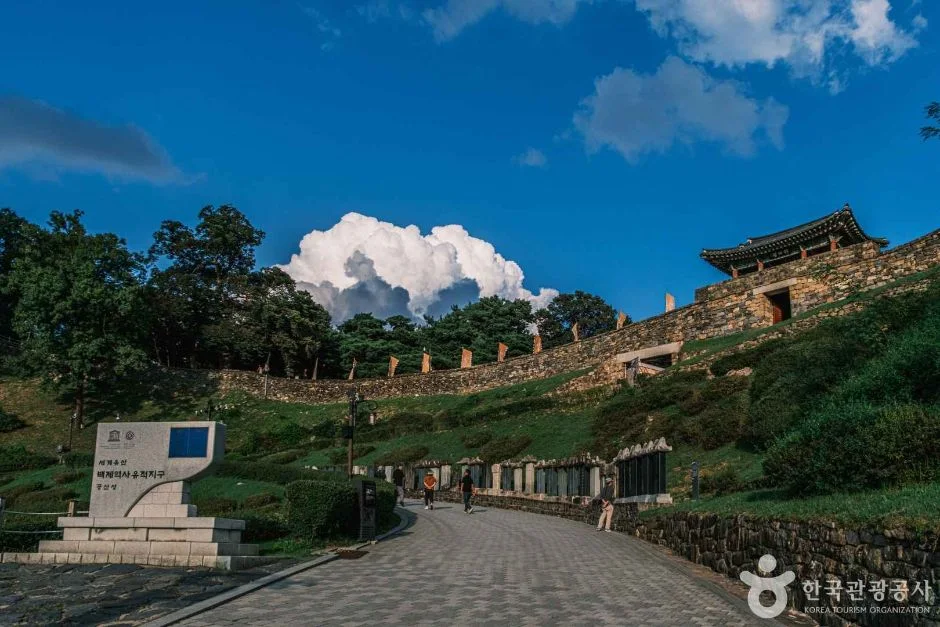
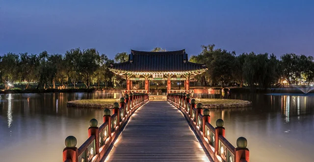
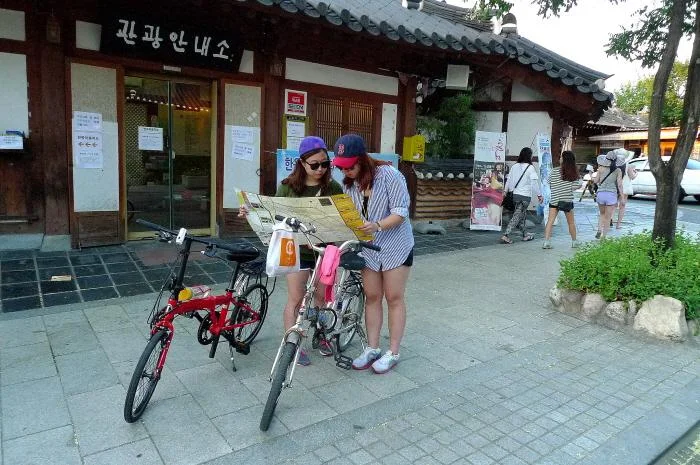

▲ 장성 백양사 쌍계루. 백제 무왕 때 창건한 절로, 물에 비치는 백학봉과 단풍이 호남 가을의 상징적인 풍경이다 ⓒ 한국관광공사 (공공누리 제1유형)
가을이 되면 차량 흐름이 한쪽으로 쏠립니다. 영동고속도로와 서울양양고속도로가 그 방향입니다.
그런데 남쪽에도 같은 계절이 옵니다. 오히려 단풍 시기가 늦어 강원권이 끝난 뒤에도 남아 있습니다.
1. 내장산, 호남의 기준점
호남권 단풍의 기준점은 내장산입니다. 국립공원이라 탐방로가 정비돼 있고, 백양사 방면과 묶으면 하루가 채워집니다.

▲ 내장산은 물가에 비치는 단풍으로 알려져 있다 ⓒ 한국관광공사 (공공누리 제1유형)
📍 국립공원 주차장은 별도 요금입니다
국립공원 입장료는 폐지됐지만 주차 요금은 남아 있습니다. 탐방로 입구와 가까운 주차장일수록 성수기에 먼저 찹니다.
단풍 절정기 주말에는 진입 도로부터 정체가 시작됩니다. 이 시기에는 아침 일찍 들어가 오후에 나오는 순서가 반대보다 훨씬 낫습니다. 오후 진입은 주차 대기만으로 시간을 다 씁니다.

▲ 내장산 진입로 구간. 도로 자체가 단풍 터널이 된다 ⓒ 한국관광공사 (공공누리 제1유형)
2. 아산 곡교천 은행나무길
충청권에서 차로 가장 접근하기 쉬운 가을 구간은 아산 곡교천의 은행나무길입니다.
도로 양옆으로 은행나무가 늘어선 직선 구간이라, 걷지 않고 차 안에서 보는 것만으로도 성립합니다. 산을 오르지 않아도 되는 코스라는 점이 다릅니다.

▲ 아산 곡교천 은행나무길. 도로 양옆으로 은행나무가 이어진다 ⓒ 한국관광공사 (공공누리 제1유형)

▲ 도로 옆으로 보행로가 따로 나 있어 차를 세우고 걸어도 된다 ⓒ 한국관광공사 (공공누리 제1유형)
3. 공주와 부여, 백제의 두 수도
아산에서 남쪽으로 내려가면 공주와 부여가 이어집니다. 두 곳 모두 유네스코 세계유산 백제역사유적지구에 속합니다.
| 도시 | 내용 |
|---|---|
| 공주 | 웅진 시기 도성 — 538년 부여 천도까지 |
| 부여 | 사비 시기 도성 — 538~660년, 123년간 |

▲ 공주 공산성. 원래는 흙으로 쌓은 토성이었고, 지금의 석성은 조선시대에 만들어졌다 ⓒ 한국관광공사 (공공누리 제1유형)
차로 다니기에 부담이 적은 구간입니다. 유적이 도심과 가깝고 주차장이 갖춰져 있어, 산을 오르는 단풍 코스와 성격이 다릅니다.

▲ 부여 궁남지. 백제 무왕이 조성한 한국에서 가장 오래된 인공 연못이다 ⓒ 한국관광공사 (공공누리 제1유형)
📍 해가 짧아지면 야간이 유리해집니다
가을에는 일몰이 빨라 오후 다섯 시만 넘어도 산에서는 볼 것이 남지 않습니다.
반대로 조명이 들어오는 유적은 이때부터가 시작입니다. 낮에 단풍 산을 보고 저녁에 공주나 부여로 내려오면, 버려지는 시간 없이 하루가 이어집니다. 궁남지와 공산성 모두 야간 경관 조명이 들어옵니다.
4. 전주는 주차가 코스의 절반
전주 한옥마을은 산이 아니라 도심입니다. 성격이 완전히 다릅니다.
| 상황 | 대응 |
|---|---|
| 마을 안쪽 | 골목이 좁아 진입 자체가 부담 |
| 주말 | 인근 공영주차장 조기 만차 |
| 권장 | 외곽 주차 후 도보 진입 |
| 경차 | 공영주차장 50% 할인 |

▲ 전주 한옥마을. 걷는 구간이 길어 주차 지점 선택이 동선을 좌우한다 ⓒ 한국관광공사 (공공누리 제1유형)

▲ 전주는 향교길·최명희길처럼 골목을 걷는 여행이다 ⓒ 한국관광공사 (공공누리 제1유형)
5. 순천만, 평지에서 걷는 가을
산행 없이 가을을 보고 싶다면 순천만입니다. 갯벌을 따라 갈대밭이 이어지고, 평지라 차에서 내려 바로 걷습니다.

▲ 순천만 갈대밭. 억새와 달리 갈대는 물가에서 넓게 퍼져 자란다 ⓒ 국가유산청 (공공누리 제1유형)
📍 노년층·유아 동반이면 평지 코스가 낫습니다
단풍 명소는 대부분 산입니다. 주차장에서 절정 구간까지 오르막이 이어지는 곳이 많아, 동행 구성에 따라 도착해서 못 걷는 상황이 생깁니다.
순천만이나 아산 은행나무길 같은 평지 코스는 이 문제가 없습니다. 유모차와 휠체어 동선도 상대적으로 확보돼 있습니다. 가을 코스를 짤 때 경사도를 먼저 보는 것이 실패를 줄입니다.
6. 이어 붙이는 방법
| 조합 | 성격 |
|---|---|
| 내장산 + 백양사 | 단풍 집중 — 하루 |
| 아산 + 공주·부여 | 평지 + 문화재 — 수도권 당일 |
| 전주 + 순천만 | 도심 + 습지 — 1박 2일 |
| 순천만 + 서해안 | 갈대 + 낙조 — 1박 2일 |
핵심은 성격이 다른 두 곳을 붙이는 것입니다. 단풍 산을 두 곳 연달아 가면 비슷한 화면이 반복되지만, 산과 평지, 혹은 도심과 자연을 섞으면 하루가 길게 느껴집니다.
7. 남부는 늦게 옵니다
단풍은 북에서 남으로 내려옵니다. 강원 산간이 절정일 때 호남은 아직이고, 강원이 끝날 무렵 남부가 절정에 듭니다.
이 시차가 실질적인 이점입니다. 강원권 성수기 정체를 피해 2~3주 뒤 남쪽으로 가면 같은 계절을 한 번 더 볼 수 있습니다.
8. 정리
호남·충청 가을 코스의 축은 넷입니다. 내장산은 백양사 방면과 묶어 하루가 되고, 아산 곡교천 은행나무길은 도로 양옆에 은행나무가 늘어선 직선 구간이라 차에서 보는 것만으로 성립합니다.
전주 한옥마을은 도심이라 주차 계획이 코스의 절반입니다. 외곽에 세우고 걸어 들어가는 편이 낫고, 경차라면 공영주차장 50% 할인을 씁니다. 순천만은 갯벌을 따라 갈대밭이 이어지는 평지라 동행 구성에 관계없이 걷기 쉽습니다.
공주와 부여는 유네스코 세계유산 백제역사유적지구로, 유적이 도심과 가까워 주차 부담이 적습니다. 가을에는 일몰이 빨라 산에서 볼 시간이 짧은데, 야간 경관 조명이 들어오는 이쪽을 저녁에 붙이면 하루가 끊기지 않습니다.
코스는 성격이 다른 두 곳을 붙일 때 가장 길게 느껴집니다. 무엇보다 남부는 단풍이 늦게 들어, 강원권 성수기를 피해 2~3주 뒤 내려가면 같은 계절을 한 번 더 볼 수 있습니다.